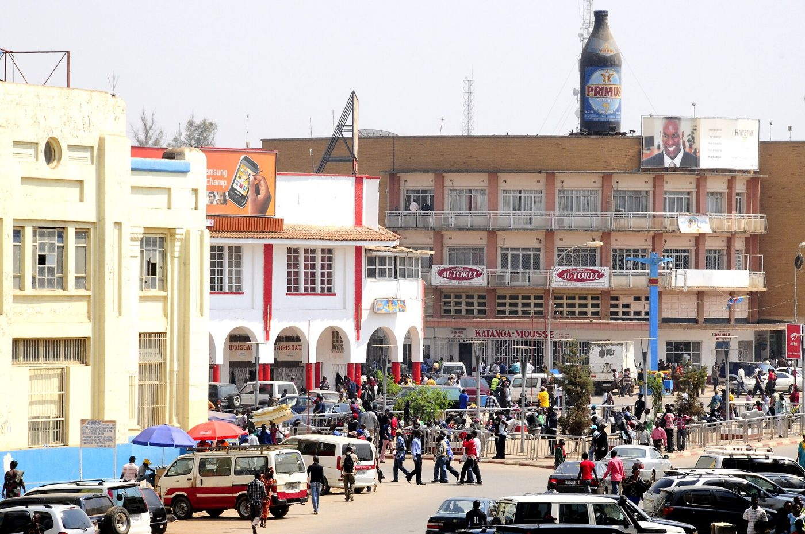

Communiqués et actualités
Résultats, production, durabilité, communautés et nominations. Archive complète, consultable par mot-clé, catégorie et année.
22 juillet 2026Production du deuxième trimestre 2026 : 16 400 tonnes de cuivre cathodeProduction
Kando Ressources a produit 16 400 t de cuivre cathode et 1 020 t de cobalt contenu au deuxième trimestre 2026, en hausse de 4 % sur le trimestre précédent, grâce à la disponibilité de l'usine (94 %) et à des teneurs alimentées conformes au plan.
Le taux de fréquence des accidents avec arrêt s'établit à 0,41. Les prévisions annuelles de 64 000 à 66 000 t de cuivre sont maintenues.
30 juin 2026L'audit Copper Mark entre dans sa phase de vérification sur siteDurabilité
Les vérificateurs indépendants ont achevé la revue documentaire des 32 critères du Copper Mark et conduiront la visite du site de Kando en septembre 2026.
La société publiera le rapport de vérification dans son intégralité.
15 mai 2026Publication du rapport de durabilité 2025, vérifié par un tiers indépendantDurabilité
Le rapport, aligné sur les normes GRI et les recommandations de la TCFD, couvre la sécurité, l'eau, les émissions, l'emploi local et le cahier des charges sociales.
Les émissions de scopes 1 et 2 ont reculé de 9 % en 2025 avec la montée en puissance de la centrale solaire.
24 avril 2026Inauguration de l'école primaire de Kanzenze, 420 élèves à la rentréeCommunauté
Douze salles de classe, un bloc administratif et des latrines ont été construits dans le cadre du cahier des charges sociales, en concertation avec le comité local de développement.
La cantine scolaire est approvisionnée par les coopératives maraîchères soutenues par la société.
27 mars 2026Résultats annuels 2025 : production record et 118 millions de dollars versés à l'ÉtatRésultats
La production de cuivre cathode a atteint 61 400 t (+9 %). Les paiements à l'État congolais, détaillés dans la déclaration ITIE, se sont élevés à 118,0 M USD.
Le conseil d'administration a approuvé un programme d'investissement de 85 M USD pour 2026, dont l'extension du parc à résidus et la campagne de sondages de Kanzenze-Sud.
10 février 2026Trois ans sans accident mortel sur le site de KandoSécurité
Le site a franchi le cap de 1 000 jours sans accident mortel. Le programme de règles vitales, les inspections avant démarrage et la formation des sous-traitants ont été étendus à l'ensemble des entreprises présentes sur le site.
Le taux de fréquence des accidents avec arrêt est passé de 0,55 en 2024 à 0,42 en 2025.
28 janvier 2026Production du quatrième trimestre et de l'exercice 2025Production
Production annuelle de 61 400 t de cuivre et 3 900 t de cobalt contenu, dans le haut de la fourchette de prévisions.
L'usine a traité 5,20 Mt de minerai à une teneur moyenne de 2,31 % Cu.
18 novembre 2025Nathalie Kabeya Tshibanda nommée directrice développement durable et communautésNomination
Juriste, précédemment responsable des relations communautaires, elle rejoint le comité de direction et pilotera le mécanisme de plaintes, le cahier des charges sociales et la certification Copper Mark.
Elle succède à Michel Tshisekedi Kanku, admis à la retraite.
1 septembre 2025Mise à jour du plan de gestion environnementale et sociale approuvéeDurabilité
Le plan révisé intègre l'extension du parc à résidus, le suivi de la qualité de l'eau de la rivière Kando et le programme de réhabilitation progressive des zones exploitées.
Un résumé non technique est disponible en français et en swahili dans les bureaux communautaires.
12 juin 2025Douze forages solaires mis en service dans les villages riverainsCommunauté
Chaque forage dessert environ 400 personnes et est géré par un comité d'usagers formé à l'entretien des pompes.
Le programme répond à la première demande exprimée lors des consultations de 2024.
10 décembre 2024Déclaration ITIE 2024 : 98,3 millions de dollars de paiements à l'ÉtatRésultats
La société publie le détail de ses paiements par nature et par entité bénéficiaire, rapproché avec les données de l'administration dans le cadre du processus ITIE-RDC.
La redevance minière représente 45 % du total.
3 juillet 2024Certification ISO 45001 du système de management de la santé et de la sécuritéSécurité
L'audit de certification a couvert la mine, l'usine et les activités des sous-traitants.
La certification sera renouvelée par audits de suivi annuels.
Contact presse
presse@kando-ressources.example · +243 97 000 00 00
Recevoir les communiqués par e-mail